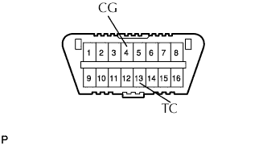
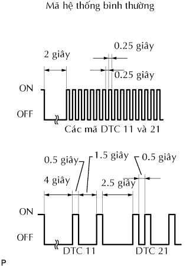
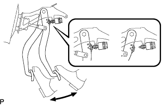
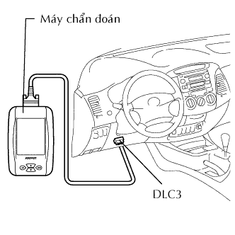

HỆ THỐNG PHANH CHỐNG HÃM CỨNG > KIỂM TRA HOẶC XOÁ MÃ DTC |
| KIỂM TRA GIẮC DTC (không dùng máy chẩn đoán) |
|  |
Dùng SST, nối tắt các cực 13 (TC) và 4(CG) của giắc DLC3.
Bật khoá điện ON.
Hãy đọc mã DTC từ đèn báo ABS trên đồng hồ táp lô.
| Khu vực nghi ngờ | Xem quy trình |
| Mạch cực TC và CG |
Kích chuột vào đây
|
| Mạch đèn báo ABS |
Kích chuột vào đây
|
|  |
Sau khi hoàn tất việc kiểm tra, tháo các cực 13 (TC) và 4 (CG) của giắc DLC3 và tắt hiển thị.
| KIỂM TRA MÃ DTC (khi dùng máy chẩn đoán) |
 |
Nối máy chẩn đoán với giắc DLC3.
Bật khoá điện ON.
Đọc các mã DTC theo hướng dẫn trên màn hình máy chẩn đoán.
| XOÁ MÃ DTC (không dùng máy chẩn đoán) |
Dùng SST, nối tắt các cực 13 (TC) và 4(CG) của giắc DLC3.
Bật khoá điện ON.
|  |
Hãy xoá các mã DTC được lưu trong ECU bằng cách đạp bàn đạp phanh 8 lần trở lên trong vòng 5 giây.
Kiểm tra rằng đén báo ABS hiển thị mã hệ thống bình thường.
Tháo SST ra khỏi các cực của giắc DLC3.
| XOÁ MÃ DTC (dùng máy chẩn đoán) |
|  |
Nối máy chẩn đoán với giắc DLC3.
Bật khoá điện ON.
Vận hành máy chẩn đoán để xoá các mã.
| KIỂM TRA ĐÈN BÁO ABS |
Bật khoá điện ON.
Kiểm tra rằng đèn báo ABS sáng lên và sau đó tắt đi trong thời gian xấp xỉ 3 giây.